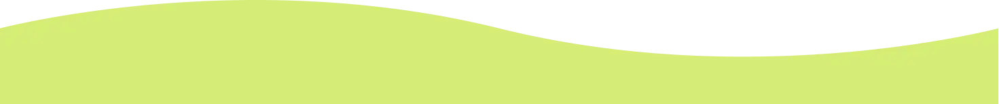

About me
I study Multimedia Design at Business Academy Copenhagen, and I am currently in my third semester, where I have chosen front-end programming as my elective.
One of the most important things I have gained is an understanding of the entire creative and technical process, from idea to finished digital solution. Based on a range of projects focused on design methods, content production, and basic web development, I have built a solid foundation.
In my free time, I am passionate about health and creating art that can spread joy.